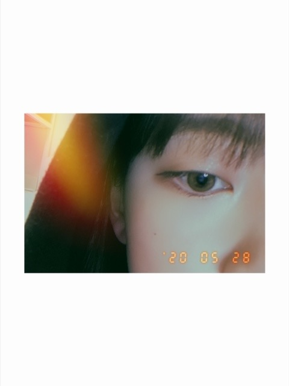
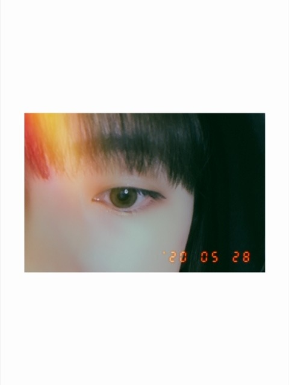
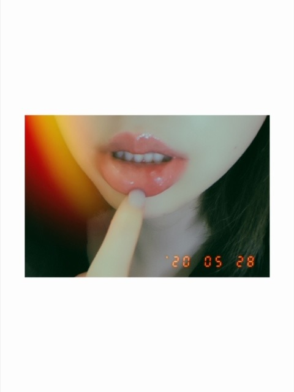
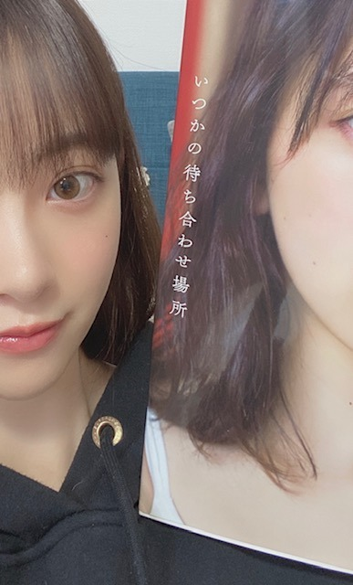
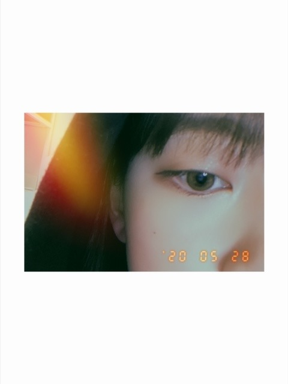
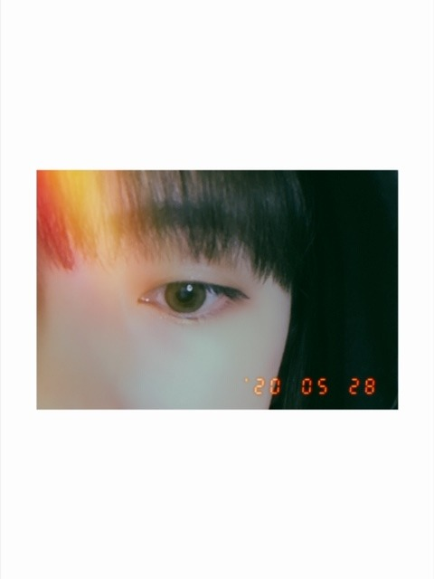
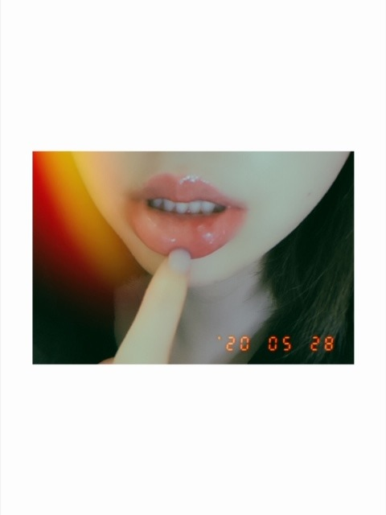
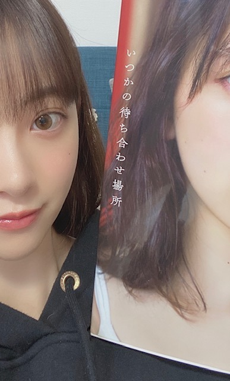

2020/0529Fri流れて雲
この2日間で天気の子3回観ました
昨日は雨上がりに虹を見ました
写真におさめようとしましたが
難しかったです
こんにちは
堀 未央奈 です
堀 が名字で 未央奈 が名前です
堀←はツチヘンです テヘンじゃないです
最近はBrandy Melville
というブランドに夢中です^o^
BMスタイルっていって甘辛コーデなんですけど
海外の学生スタイルみたいでかわいいんです
あとは
相変わらずパリジェンヌぽい格好もすきです
今年の夏たくさん着れたらな〜〜
ネットでぽちぽちお買い物しちゃってます...
程々にします...



口内炎なおりません
悪化してます
(見せてくスタイル)
そうそう
背中を押してくれる曲を教えてください
というコメントをみたので...
back numberさんの
SISTER
平日のブルース
頬を濡らす雨のように
は、歌詞がすごく良いです
是非聴いてみてください！

#いつかの待ち合わせ場所
たくさんの素敵な感想ありがとうございます✨
ちゃんとみてます！
ではでは
この2日間で天気の子3回観ました
昨日は雨上がりに虹を見ました
写真におさめようとしましたが
難しかったです
こんにちは
堀 未央奈 です
堀 が名字で 未央奈 が名前です
堀←はツチヘンです テヘンじゃないです
最近はBrandy Melville
というブランドに夢中です^o^
BMスタイルっていって甘辛コーデなんですけど
海外の学生スタイルみたいでかわいいんです
あとは
相変わらずパリジェンヌぽい格好もすきです
今年の夏たくさん着れたらな〜〜
ネットでぽちぽちお買い物しちゃってます...
程々にします...



口内炎なおりません
悪化してます
(見せてくスタイル)
そうそう
背中を押してくれる曲を教えてください
というコメントをみたので...
back numberさんの
SISTER
平日のブルース
頬を濡らす雨のように
は、歌詞がすごく良いです
是非聴いてみてください！

#いつかの待ち合わせ場所
たくさんの素敵な感想ありがとうございます✨
ちゃんとみてます！
ではでは
2020/05/29 14:12
コメント(361)
未央奈さん、28日のSHOWROOM見ましたよ。
とても楽しい配信でしたね。
写真集のカットの説明も良かったですよ。
口内炎早く治るといいですね。
(^○^)
CRYSTALより。
とても楽しい配信でしたね。
写真集のカットの説明も良かったですよ。
口内炎早く治るといいですね。
(^○^)
CRYSTALより。
痛そうですね、、いそじんでは痛そうなので
ヴィックスとかもよいかもです！
お茶もいいかもしれませんね♪
最後のほうのモノクロの2枚のお写真もとても
良くて、印象的でした☆
ヴィックスとかもよいかもです！
お茶もいいかもしれませんね♪
最後のほうのモノクロの2枚のお写真もとても
良くて、印象的でした☆
堀ちゃんの写真集最高です！！！！
特に堀ちゃんの目が好きです！！！！！！！
これからも頑張って下さい！！！
特に堀ちゃんの目が好きです！！！！！！！
これからも頑張って下さい！！！
更新ありがとう！
口内炎は胃が荒れてない？ストレスが溜まったり、早食いとかしたら胃が疲れて口内炎になるよ。
あとはビタミンB2B6の不足かもしれない。チョコラB Bがオススメです。
あとはビタミンB2B6の不足かもしれない。チョコラB Bがオススメです。
未央奈ちゃん、こんばんは(^o^)/
口内炎は病院(耳鼻咽喉科)に行きましょう
写真集どの写真が一番って決められません
口内炎は病院(耳鼻咽喉科)に行きましょう
写真集どの写真が一番って決められません
堀さん、こんばんは。ブログ更新してくれてありがとうございます。
天気の子もう発売されてたんですね。僕も見ようと思います。
口内炎、大変そうですね。自粛生活からいきなり写真集のプロモーションで連日緊張続きだったから、とても疲れが溜まったんですよね。無理せず身体慣らしていけたらいいですね。
挙げてくれた曲はどれも良い歌詞ですね。特に「頬を濡らす雨のように」が良かったです。最後に、”あの歌のように”であなたの為の歌ですって聞いてる人に伝えてる所と、”僕を照らす君のように”で曲と歌手と聞き手がそれぞれ両想いになる感じが良かったです。
写真集何度も読み直してます。桟橋で着てた水着姿の一連の写真は、あどけない笑顔や無防備な表情や余裕のある微笑み等々、本当に多彩でどれも違ってどれも魅力的で素晴らしいです。
オテンキのりさんにも写真再現してもらって嬉しいですね。最もセンセーショナルな写真としてあれを選んでくれたんですね。
そういえばブログの写真が右目左目唇と並んでて福笑いみたいですね。そう見るとモンゾーくんとの写真も猿回しみたいでめでたく見えてきます。見たくなったから猿回しとスマホの動画見て寝ます。おやすみなさい。
天気の子もう発売されてたんですね。僕も見ようと思います。
口内炎、大変そうですね。自粛生活からいきなり写真集のプロモーションで連日緊張続きだったから、とても疲れが溜まったんですよね。無理せず身体慣らしていけたらいいですね。
挙げてくれた曲はどれも良い歌詞ですね。特に「頬を濡らす雨のように」が良かったです。最後に、”あの歌のように”であなたの為の歌ですって聞いてる人に伝えてる所と、”僕を照らす君のように”で曲と歌手と聞き手がそれぞれ両想いになる感じが良かったです。
写真集何度も読み直してます。桟橋で着てた水着姿の一連の写真は、あどけない笑顔や無防備な表情や余裕のある微笑み等々、本当に多彩でどれも違ってどれも魅力的で素晴らしいです。
オテンキのりさんにも写真再現してもらって嬉しいですね。最もセンセーショナルな写真としてあれを選んでくれたんですね。
そういえばブログの写真が右目左目唇と並んでて福笑いみたいですね。そう見るとモンゾーくんとの写真も猿回しみたいでめでたく見えてきます。見たくなったから猿回しとスマホの動画見て寝ます。おやすみなさい。
この間のZIPの件、南フランスのことを「なんふつ」と言う堀様にしびれました。
今度から僕も南フランスのことを「なんふつ」と呼ぶようにしようと思いましたが、私の人生において、南フランスが会話に登場するような機会はありませんでした。
今度から僕も南フランスのことを「なんふつ」と呼ぶようにしようと思いましたが、私の人生において、南フランスが会話に登場するような機会はありませんでした。
こんばんは！
この前のブログで あの夏へ をよく聴くと見たのですが、それ以来良い曲だなぁと思い、私もよく聞いています！
また、SEKAI NO OWARIのNakajinさんがAu/Raさんとコラボをして あの夏へ を出しているので、そちらもおすすめです！
是非聴いてみてください！
この前のブログで あの夏へ をよく聴くと見たのですが、それ以来良い曲だなぁと思い、私もよく聞いています！
また、SEKAI NO OWARIのNakajinさんがAu/Raさんとコラボをして あの夏へ を出しているので、そちらもおすすめです！
是非聴いてみてください！
レコメン、面白かった。
未央奈太夫 ww
未央奈太夫 ww
わおっ！さすが！笑
こっちはみおちゃんの影響で天気の子と君の名は。のBlu-rayを衝動買いしたよー！笑
いっぱいみよっと♪
雨上がりの虹〜良いことありそう！だね！☺︎
こんばんは〜
堀 未央奈 さん(^-^)
大切よね。こっちもよく名字も名前も間違えられる。笑
おぉー！さっきインスタでみたよー！
甘辛コーデかぁ。ほんとだね、海外の学生っぽい。笑
パリジェンヌ〜
すごい世界よね〜ポチッてしたら買い物ができちゃうんだもんね〜
お財布と相談ですね。笑
あ、ども。もんぞーくん。
かわいいねー、みおちゃん♪
め め くち
口内炎見せてくスタイル！笑
見守ってるね、口内炎。(たぶん、生まれてきて初めて言った言葉。笑)
たぶん生活リズムじゃないかな、写真集が大好評だからしゃーなし！
ありがと〜
back numberさんの曲はなんか安心感あるよねー
平日のブルース 初めて聴いたかも。良い歌詞だねー！ほっこり。☺️
こっちは最近、
YOASOBIさんの あの夢をなぞって
TWICEさんの TURTLE
Vaundyさんの 不可幸力
を聴いてるかな♪
いつかの待ち合わせ場所✨
素敵なタイトルで素敵な写真集。
みおちゃんの魅力がいっぱい詰まってる〜
昨日ちょっとオードリーヘプバーンさんのことを調べてたんだけど、白黒の写真とかピンクの服装とかを写真集に取り入れたのももしかして影響を受けてなのかなぁ。って思ったり思わなかったり。
最高の一冊だよ！すき！
ではー✌️
こっちはみおちゃんの影響で天気の子と君の名は。のBlu-rayを衝動買いしたよー！笑
いっぱいみよっと♪
雨上がりの虹〜良いことありそう！だね！☺︎
こんばんは〜
堀 未央奈 さん(^-^)
大切よね。こっちもよく名字も名前も間違えられる。笑
おぉー！さっきインスタでみたよー！
甘辛コーデかぁ。ほんとだね、海外の学生っぽい。笑
パリジェンヌ〜
すごい世界よね〜ポチッてしたら買い物ができちゃうんだもんね〜
お財布と相談ですね。笑
あ、ども。もんぞーくん。
かわいいねー、みおちゃん♪
め め くち
口内炎見せてくスタイル！笑
見守ってるね、口内炎。(たぶん、生まれてきて初めて言った言葉。笑)
たぶん生活リズムじゃないかな、写真集が大好評だからしゃーなし！
ありがと〜
back numberさんの曲はなんか安心感あるよねー
平日のブルース 初めて聴いたかも。良い歌詞だねー！ほっこり。☺️
こっちは最近、
YOASOBIさんの あの夢をなぞって
TWICEさんの TURTLE
Vaundyさんの 不可幸力
を聴いてるかな♪
いつかの待ち合わせ場所✨
素敵なタイトルで素敵な写真集。
みおちゃんの魅力がいっぱい詰まってる〜
昨日ちょっとオードリーヘプバーンさんのことを調べてたんだけど、白黒の写真とかピンクの服装とかを写真集に取り入れたのももしかして影響を受けてなのかなぁ。って思ったり思わなかったり。
最高の一冊だよ！すき！
ではー✌️
いつか使ってるカラコンとか、
こだわってるメイク方法とか、
スキンケアとかまとめた本出してほしいです！！
どんどん可愛くなっていってて
大好きです！！
こだわってるメイク方法とか、
スキンケアとかまとめた本出してほしいです！！
どんどん可愛くなっていってて
大好きです！！
未央奈写真集発売おめでとう。口内炎辛そうですね。お大事に！毎日、ブログ更新してくれてありがとう。元気出る。 やっと一週間終わった。今週から学校が再開されたから一週間が長く感じる。今日もありがとう。明日のブログも楽しみだなぁ！
堀さん、こんばんは。
「天気の子」良いですよね！
今日もブログの更新ありがとうございます。
この時期でも、色々工夫して楽しませてくれる乃木坂の皆さんには、とても感謝しています。
ところで、おうち時間に
おすすめの動画があります。
YouTubeで公開されている動画なのですが、
「Take Me to the World: A Sondheim 90th Birthday Celebration」
というコンサートです。
このコンサートは、なんと、
全編リモートで製作されています！
ブロードウェイ史上最高の天才、スティーブン・ソンドハイムさんの
90歳の誕生日を祝うために開催されたコンサートで、
ブロードウェイとハリウッドの大スターが40人以上出演しています。
しかも、全員が自分の家からテレワークで出演しています。
YouTubeで無料公開されているので、
おうち時間の過ごし方に是非オススメです。
堀さんは女優としても活躍していますし、
舞台やミュージカルを観る機会も多いと思うので、
たぶん、出演者を観たら、その豪華さに衝撃を受けると思います。
「天気の子」良いですよね！
今日もブログの更新ありがとうございます。
この時期でも、色々工夫して楽しませてくれる乃木坂の皆さんには、とても感謝しています。
ところで、おうち時間に
おすすめの動画があります。
YouTubeで公開されている動画なのですが、
「Take Me to the World: A Sondheim 90th Birthday Celebration」
というコンサートです。
このコンサートは、なんと、
全編リモートで製作されています！
ブロードウェイ史上最高の天才、スティーブン・ソンドハイムさんの
90歳の誕生日を祝うために開催されたコンサートで、
ブロードウェイとハリウッドの大スターが40人以上出演しています。
しかも、全員が自分の家からテレワークで出演しています。
YouTubeで無料公開されているので、
おうち時間の過ごし方に是非オススメです。
堀さんは女優としても活躍していますし、
舞台やミュージカルを観る機会も多いと思うので、
たぶん、出演者を観たら、その豪華さに衝撃を受けると思います。
治りの悪い口内炎は、医療機関の受診をお勧め致します。
更新ありがとう〜！！
昨日写真集やっと届いて見た！！
自分は楽天ブックス版買ったよ！！
とても素敵でした。メイクや髪型、服装が違うだけで全然印象が違くて驚きました。前髪上げておでこ出してんのも普段は全然しないって言ってたけど、普段からもして欲しいくらい可愛かったなぁ。最後のコメントも、未央奈のお仕事への姿勢、表現することへの思いなどたくさんのことが知れて本当に最高の写真集でした。何回でも見ますよ！！
今でも最高すぎるくらい素敵な女性だけど、きっとストイックな未央奈だからもっともっと上目指していくと思うからこれからも応援していきます！！3rd写真集も出しちゃったりね笑笑(期待)
これからもめちゃめちゃ推してくぜい
体調には気をつけてね！
ではでは
昨日写真集やっと届いて見た！！
自分は楽天ブックス版買ったよ！！
とても素敵でした。メイクや髪型、服装が違うだけで全然印象が違くて驚きました。前髪上げておでこ出してんのも普段は全然しないって言ってたけど、普段からもして欲しいくらい可愛かったなぁ。最後のコメントも、未央奈のお仕事への姿勢、表現することへの思いなどたくさんのことが知れて本当に最高の写真集でした。何回でも見ますよ！！
今でも最高すぎるくらい素敵な女性だけど、きっとストイックな未央奈だからもっともっと上目指していくと思うからこれからも応援していきます！！3rd写真集も出しちゃったりね笑笑(期待)
これからもめちゃめちゃ推してくぜい
体調には気をつけてね！
ではでは
大好きな未央奈ちゃんおはよう!早く未央奈ちゃんの口内炎が治りますように!未央奈太夫と田村太夫をやっている姿見たかったなあ!動画や写真ないかなあ!絶対、かわいいの間違いなし!
天気の子わ、映画で２回見た(笑)
今すぐ晴れるよって雨模様のライブの時とかやって欲しい
今すぐ晴れるよって雨模様のライブの時とかやって欲しい
みおなちゃん、大好きです
未央奈ちゃん更新ありがとう！
改めての自己紹介ありがとうございます。
改めて見ると未央奈って名前可愛いですね！
柔らかい感じがして好き。
さて今日も未央奈ちゃんを見て、
元気をもらおうと思います！
未央奈ちゃんいつもありがとう！
改めての自己紹介ありがとうございます。
改めて見ると未央奈って名前可愛いですね！
柔らかい感じがして好き。
さて今日も未央奈ちゃんを見て、
元気をもらおうと思います！
未央奈ちゃんいつもありがとう！
写真集 感想文追加
最初の彼女感あるかわいいから最後は、20代のセクシーな感じで全て詰まったような１冊ですね。
カバーをめくった、真の１ページ目も見ましたよ。（ちゃんとそういった所もチェックするＡ型の僕。）
おぅふ…( 〃▽〃)❤それ以上は書けない//
最初の方の編み込み(？)なのと、焦げ茶色な水着が個人的に良いです。
ひざにキスマークをつけてリボンを結んでいるカットは、どんな意味が込められているんだろうと考え中。。
あとね、、、元々、未央奈ちゃんは美肌と思ってたけど、後ろ姿の写真もスゴいきれい☆
(*^O^*)
徹底してるなと思います。
14ページ目くらいのやつ、本当に未央奈ちゃんてくらい多少雰囲気が違ってかわいいです！
ポニーテールの次のシーンの。
あと、食べてるものの名前なんだっけ？僕も食べた事あるんだけど、名前とどこで買ったのか思い出せない。。ラスクっぽいの。。
(￣▽￣;)
最初の彼女感あるかわいいから最後は、20代のセクシーな感じで全て詰まったような１冊ですね。
カバーをめくった、真の１ページ目も見ましたよ。（ちゃんとそういった所もチェックするＡ型の僕。）
おぅふ…( 〃▽〃)❤それ以上は書けない//
最初の方の編み込み(？)なのと、焦げ茶色な水着が個人的に良いです。
ひざにキスマークをつけてリボンを結んでいるカットは、どんな意味が込められているんだろうと考え中。。
あとね、、、元々、未央奈ちゃんは美肌と思ってたけど、後ろ姿の写真もスゴいきれい☆
(*^O^*)
徹底してるなと思います。
14ページ目くらいのやつ、本当に未央奈ちゃんてくらい多少雰囲気が違ってかわいいです！
ポニーテールの次のシーンの。
あと、食べてるものの名前なんだっけ？僕も食べた事あるんだけど、名前とどこで買ったのか思い出せない。。ラスクっぽいの。。
(￣▽￣;)
マスクしててもめっちゃ可愛い！
未央奈～～～～～～～～～。
それって、もしかしたら、ストレスのせいじゃないかな。医者に見てもらって、お薬とか塗ってるわけですから。気晴らしにスケッチブック持って近所を散歩し、わぁ、きれいって場所があったらスケッチしてみるとか、文庫本をベンチに座りながら読んで見るとか、日常と違うことしてみたらどうでしょう。効果なかったらごめんなさい。
では、又、更新待ってます。
それって、もしかしたら、ストレスのせいじゃないかな。医者に見てもらって、お薬とか塗ってるわけですから。気晴らしにスケッチブック持って近所を散歩し、わぁ、きれいって場所があったらスケッチしてみるとか、文庫本をベンチに座りながら読んで見るとか、日常と違うことしてみたらどうでしょう。効果なかったらごめんなさい。
では、又、更新待ってます。
未央奈～～
コメント久しぶりになってしまってごめんなさいm(_ _)m
口内炎痛そうで早く良くなること祈っていますね
インスタライブ、SHOWROOM配信仕事でリアルタイムでは観られなかったので動画検索して観ますね！
2nd写真集「いつかの待ち合わせの場所」
未央奈の良さ、美しさが溢れすぎです。と思いきやちょっと幼い部分が表現されていたりとバラエティに富んだ内容で嬉しすぎですよ～～
個人的に好きな写真はメディアでも紹介されていた写真でクロワッサン食べている写真 未央奈らしくて大好きだし、セブンネット限定の表紙にもなっている写真、裏表紙の写真が個人的にはめっちゃ大好きだよ～～
未央奈らしくて大好きだし、セブンネット限定の表紙にもなっている写真、裏表紙の写真が個人的にはめっちゃ大好きだよ～～
兎に角未央奈の良さ、美しさが溢れすぎです通常版から全Type表紙ゲットしてるので、セブンネット限定のポスター、モバイル限定クリアファイル、ポストカード等々めっちゃ美しすぎます。どれも素晴らしい特典に嬉しさが止まりません。ポストカードも全部コンプリートしたいけど頑張ってみますね(^-^)
まだHMV限定だけ取りに行けてないので本日の仕事帰りに取ってきます！
まだまだコロナウイルス感染によることでお仕事大変だとは思いますが頑張ってね！
遠くからではありますが見守っています。
Ryuseiでは心もとないと思いますがそこは愛嬌でね(*^^*)
レコメンも聴きました～～(*^^*)
久しぶりののりさんとの共演、めっちゃ楽しかった～～(*^^*)
未央奈太夫めっちゃ可愛すぎて癒されました(*^^*)ありがたき＼(^-^)／まゆちゃんとの共演もまた楽しみに待ってますね＼(^-^)／
ではではまたね(~▽~＠)♪♪♪
まだ自粛生活大変だとは思いますが遠くからではありますが見守りつつ、応援させて頂きます！
大好きな未央奈♡♡♡愛してるよ～～(*^^*)
またコメントしに来ます！
コメント久しぶりになってしまってごめんなさいm(_ _)m
口内炎痛そうで早く良くなること祈っていますね
インスタライブ、SHOWROOM配信仕事でリアルタイムでは観られなかったので動画検索して観ますね！
2nd写真集「いつかの待ち合わせの場所」
未央奈の良さ、美しさが溢れすぎです。と思いきやちょっと幼い部分が表現されていたりとバラエティに富んだ内容で嬉しすぎですよ～～
個人的に好きな写真はメディアでも紹介されていた写真でクロワッサン食べている写真
兎に角未央奈の良さ、美しさが溢れすぎです
まだHMV限定だけ取りに行けてないので本日の仕事帰りに取ってきます！
まだまだコロナウイルス感染によることでお仕事大変だとは思いますが頑張ってね！
遠くからではありますが見守っています。
Ryuseiでは心もとないと思いますがそこは愛嬌でね(*^^*)
レコメンも聴きました～～(*^^*)
久しぶりののりさんとの共演、めっちゃ楽しかった～～(*^^*)
未央奈太夫めっちゃ可愛すぎて癒されました(*^^*)ありがたき＼(^-^)／まゆちゃんとの共演もまた楽しみに待ってますね＼(^-^)／
ではではまたね(~▽~＠)♪♪♪
まだ自粛生活大変だとは思いますが遠くからではありますが見守りつつ、応援させて頂きます！
大好きな未央奈♡♡♡愛してるよ～～(*^^*)
またコメントしに来ます！
未央奈ちゃんブログ更新ありがとう！先程写真集購入したよ。またチェックするよ
堀ちゃん
こんにちは。
おじさんも舌に口内炎ができて、
痛くて辛いです。
ぴえ～ん
ビタミンBを採ると良いらしいです。
こんにちは。
おじさんも舌に口内炎ができて、
痛くて辛いです。
ぴえ～ん
ビタミンBを採ると良いらしいです。
ブログ更新ありがとう。
最近の更新回数の多さは、感謝と拍手です。
私は毎回コメント出来てないけど、欠かさずチェックはしてます。
口内炎痛そうですね。
私も以前よくなりましたよ、治るまで1週間くらい我慢するしかないね。
写真集買いました、見ました。
私の感想としては、見どころもあって、他のメンバーのものと比べてもなかなか良い出来だと思う。
未央奈は細身で肌がきれい！
好きな写真は赤い柄の水着のものです。
気になったところは、食べてる写真が結構多いなぁと思った。
まあ、未央奈らしさが出ていていいけど。(笑)
以上、またちょくちょくコメントさせて頂きます。
最近の更新回数の多さは、感謝と拍手です。
私は毎回コメント出来てないけど、欠かさずチェックはしてます。
口内炎痛そうですね。
私も以前よくなりましたよ、治るまで1週間くらい我慢するしかないね。
写真集買いました、見ました。
私の感想としては、見どころもあって、他のメンバーのものと比べてもなかなか良い出来だと思う。
未央奈は細身で肌がきれい！
好きな写真は赤い柄の水着のものです。
気になったところは、食べてる写真が結構多いなぁと思った。
まあ、未央奈らしさが出ていていいけど。(笑)
以上、またちょくちょくコメントさせて頂きます。
写真集最高でした！堀ちゃんの内面が見えているようです♪
口内炎は、できてから一週間で治ります。あと少しの辛抱です！
口内炎は、できてから一週間で治ります。あと少しの辛抱です！
インスタも見てます！ストリーのお返事とかで未央奈ちゃんの考え方を見て、すごいなぁと本当に思います。素敵です。
ただ、口内炎のお写真はびっくりしてしまいました…。お大事に、早く治るといいですね！
未央奈ちゃんを見ていると可愛くなろうっていう、モチベーションが上がります！女の子って楽しいですね〜♪
ただ、口内炎のお写真はびっくりしてしまいました…。お大事に、早く治るといいですね！
未央奈ちゃんを見ていると可愛くなろうっていう、モチベーションが上がります！女の子って楽しいですね〜♪
みおな
ギリおはようございます
堀っていう時は、掘と間違えられやすいかもしれないけど、俺は絶対に間違えないです笑
俺も名前に汰という字があるけど、さんずいがつくので、太と間違えられやすいです
小中の卒業証書は間違えられたから、卒業後に俺だけ後日直したのを取りに行くという思い出があります
高校の時はあらかじめ先生に忠告しときました笑
最近は天気がスッキリしなくなってきたけど、昨日は帰ってる時に俺も虹を見たよ
もうすぐ暑くなってくるので、嫌だけど頑張りましょう
冬はそんなに寒くなくて、夏は溶けるくらい暑いので、温暖化が進んでると感じてます
口内炎早く治るといいですね
俺も上の唇にできたから痛いです
だけど今日は共通点多めでなんか嬉しいです笑
写真集も見てるよ
またコメントします
ありがとうございました
ギリおはようございます
堀っていう時は、掘と間違えられやすいかもしれないけど、俺は絶対に間違えないです笑
俺も名前に汰という字があるけど、さんずいがつくので、太と間違えられやすいです
小中の卒業証書は間違えられたから、卒業後に俺だけ後日直したのを取りに行くという思い出があります
高校の時はあらかじめ先生に忠告しときました笑
最近は天気がスッキリしなくなってきたけど、昨日は帰ってる時に俺も虹を見たよ
もうすぐ暑くなってくるので、嫌だけど頑張りましょう
冬はそんなに寒くなくて、夏は溶けるくらい暑いので、温暖化が進んでると感じてます
口内炎早く治るといいですね
俺も上の唇にできたから痛いです
だけど今日は共通点多めでなんか嬉しいです笑
写真集も見てるよ
またコメントします
ありがとうございました
未央奈〜 今日もお疲れです
応援してます はい！
写真集とても良かったよー^ ^
応援してます はい！
写真集とても良かったよー^ ^
堀ちゃん、おはよ！＼(・∇・)／
ふむふむ、アイドルについて自分なりに勉強していたのかな。
それは良いことだね
でも、あまり無理しないで睡眠ちゃんととってね♪
口内炎治ってきたみたいでよかったよ
ふむふむ、アイドルについて自分なりに勉強していたのかな。
それは良いことだね
でも、あまり無理しないで睡眠ちゃんととってね♪
口内炎治ってきたみたいでよかったよ
みおなちゃん更新ありがとう╰(*´︶`*)╯♡
2nd写真集発売おめでとう！
セブンネットで購入したけどやっとこさ自分の手元にも届きました(*´꒳`*)
大人っぽいみおなちゃんと一緒に旅行している気持ちになれて良きでした(๑>◡<๑)
何回も見るねー
モバメもありがとね
口内炎良くなるといいね〜
2nd写真集発売おめでとう！
セブンネットで購入したけどやっとこさ自分の手元にも届きました(*´꒳`*)
大人っぽいみおなちゃんと一緒に旅行している気持ちになれて良きでした(๑>◡<๑)
何回も見るねー
モバメもありがとね
口内炎良くなるといいね〜
未央奈ー。
口内炎、良くなってきて良かったねー！！
モバメの写真も可愛すぎて、ニヤニヤしちゃう笑
もともとあまりアイドルに興味は無かったんけど、堀未央奈というアイドルに、はまってしまいました。
そしてそのアイドルを育んだ乃木坂46にはまってしまいます。
口内炎、良くなってきて良かったねー！！
モバメの写真も可愛すぎて、ニヤニヤしちゃう笑
もともとあまりアイドルに興味は無かったんけど、堀未央奈というアイドルに、はまってしまいました。
そしてそのアイドルを育んだ乃木坂46にはまってしまいます。
浜松餃子上手くて感動嬉しいよー
みおなちゃんこんにちは。｢天気の子」まだおいらの住む地域では映画館で上映していたので、先日、観てきたよ。やっぱり大きいスクリーンで観るのはいいね。隠れキャラクターに｢君の名は。」の登場人物も出ていたのは知ってた？
おはよー！
え、朝５時まで考えてたってすごいね、ていうかやばいねw(；・∀・)
確かにこれから仕事もいろいろ戻って増えてきたら大変だよー。1時間ずつくらい早く寝るように頑張ってみよー☆
お！口内炎良くなってるんだ！良かったぁー！
俺も１ヶ月前くらいになって痛いのとか分かるから良くなってほしかったんだー。
生ハム塩分控えに！でっせーヽ(￣▽￣)ノ
え、朝５時まで考えてたってすごいね、ていうかやばいねw(；・∀・)
確かにこれから仕事もいろいろ戻って増えてきたら大変だよー。1時間ずつくらい早く寝るように頑張ってみよー☆
お！口内炎良くなってるんだ！良かったぁー！
俺も１ヶ月前くらいになって痛いのとか分かるから良くなってほしかったんだー。
生ハム塩分控えに！でっせーヽ(￣▽￣)ノ
口内炎早く良くなると良いね(^-^)
パリジェンヌ風ってどんなですか？参考にしたいから載せてください！
堀さん、こんにちは。
改めてコメント欄なんかで「掘さん」と書かれているのを見ると気になります。掘る作業ではなく、出来上がったお堀の方がお名前なのに、ねえ。
もともと乃木坂46はフランスのリセがイメージだそうですから、パリジェンヌ風のお洋服が似合うのは自然の摂理と申せましょう。「リセ」のフランス語のスペルを見ると「lycée」。いかにもフランス語的で、とてもすてき。
口内炎大変ですね。ビタミンと睡眠をしっかりとって、早く治してくださね。引き続きどうぞお大事に。
ではまたコメント寄せます。
さらばだ、また会おう！（気球に乗って去りぬ〜）
改めてコメント欄なんかで「掘さん」と書かれているのを見ると気になります。掘る作業ではなく、出来上がったお堀の方がお名前なのに、ねえ。
もともと乃木坂46はフランスのリセがイメージだそうですから、パリジェンヌ風のお洋服が似合うのは自然の摂理と申せましょう。「リセ」のフランス語のスペルを見ると「lycée」。いかにもフランス語的で、とてもすてき。
口内炎大変ですね。ビタミンと睡眠をしっかりとって、早く治してくださね。引き続きどうぞお大事に。
ではまたコメント寄せます。
さらばだ、また会おう！（気球に乗って去りぬ〜）
いつかの待ち合わせ場所HMVさんで購入しました！未央奈ちゃんの可愛さとか大人っぽさがたくさん詰まった1冊でした。ポストカードも可愛い インスタライブやSHOWROOMも見ました！スクショタイムとかもぐもぐタイムめっちゃスクショしまくりました。未央奈ちゃん大好きすぎるので早く会いたいです！でも今私は絶賛ニュージーランドに留学中です！帰国したら未央奈ちゃんに会いに行きます！！！
堀ちゃんこんにちは〜
名前間違えられたのですか？wひょっとしたら文字を変換する時に「掘」になっているのに気づかず変換したとか？僕の予想ですけどね。僕は間違ってませんよね？「堀、堀、堀、堀、堀」なんか呼び捨てみたいになってすんませんw
明後日から高校始まる！！楽しみだけど不安もある。その前に課題を終わらせないとヤバいw苦手な教科を残しておくんじゃなかった〜wまあ、頑張ります！！
名前間違えられたのですか？wひょっとしたら文字を変換する時に「掘」になっているのに気づかず変換したとか？僕の予想ですけどね。僕は間違ってませんよね？「堀、堀、堀、堀、堀」なんか呼び捨てみたいになってすんませんw
明後日から高校始まる！！楽しみだけど不安もある。その前に課題を終わらせないとヤバいw苦手な教科を残しておくんじゃなかった〜wまあ、頑張ります！！
へい未央奈(•ө•)
・天気悪いな..ほりぴーの写真集は今度取りに行こう(明日とは書いてない←だって雨なんだもん←未央奈:行きなさい！みたいな？)
・今凄ーーーく悩んでいるんだが、海外ドラマ"ハンニバル"か"SWAT'どちらかを見ようと(・へ・)
・ふはは最先端技術で、今年の齋藤飛鳥の読書量を超えちゃうかも！(←)オンライン図書館なる素晴らしいのがあるらしいんだよ( ͡° ͜ʖ ͡°)本数は少ないだろうけど、返しに行く手間を考えると。笑(メンドリ草がりなんです←)
・今日はた行の字の練習(^^)三日坊主は免れたぞ。笑
がんば未央奈ー
・天気悪いな..ほりぴーの写真集は今度取りに行こう(明日とは書いてない←だって雨なんだもん←未央奈:行きなさい！みたいな？)
・今凄ーーーく悩んでいるんだが、海外ドラマ"ハンニバル"か"SWAT'どちらかを見ようと(・へ・)
・ふはは最先端技術で、今年の齋藤飛鳥の読書量を超えちゃうかも！(←)オンライン図書館なる素晴らしいのがあるらしいんだよ( ͡° ͜ʖ ͡°)本数は少ないだろうけど、返しに行く手間を考えると。笑(メンドリ草がりなんです←)
・今日はた行の字の練習(^^)三日坊主は免れたぞ。笑
がんば未央奈ー
未央奈ブログ更新ありがとう！
コメント遅れてゴメン
いつもインスタ見てるよ〜！
またライブとかしてくれるかな？
待ってるよ〜
これからも応援してるよ！
体調には気をつけてね！
by未央奈推しのブラックコーヒー
コメント遅れてゴメン
いつもインスタ見てるよ〜！
またライブとかしてくれるかな？
待ってるよ〜
これからも応援してるよ！
体調には気をつけてね！
by未央奈推しのブラックコーヒー
Greatest showman
♪The Greatest showman
Kis-My-Ft2
♪To Yours
♪My Place
♪smilest
ジャニーズWEST
♪Wtrouble
♪Glory Days
♪special love
♪survival
♪ごっつえーFriday
♪HEY!!!!!!
♪to you
NEWS
♪STORY
♪SUPER STAR
♪Love story
♪トップガン
ブログ更新ありがとう セカンド写真集買ってからもう、しょっちゅう見ていていつもにやけてる。もちろん、いやらしい意味じゃなくてね。笑笑。かわいいなぁと思って。未央奈は、乃木坂の曲の中で最も好きな曲はなに？僕はいつかできるから今日できる、シャキイズムやな〜。できたらお返事お願いできるかなぁ？またブログ更新してな〜。未央奈、だいすきやで〜❤
はーーい♪Premium Musicみまっす！
あ、パーカー未央奈だ☆
やっぱ、目に引き込まれるな～～( 〃▽〃)
あとピースのやりかた好きw
あ、パーカー未央奈だ☆
やっぱ、目に引き込まれるな～～( 〃▽〃)
あとピースのやりかた好きw
未央奈❤️
今日ＨＭＶ限定盤の写真集を受け取りに行ってきて、３冊目が無事に手元に届きました！
表紙が一番お気に入りなので、可愛い❤️！となったのと、ポストカードも可愛くて幸せです☺️
写真集見ていて、未央奈のくびれが綺麗で憧れると思ったのと、黒の透けてる大人っぽい衣装のときに見えた腹筋が美しいと思いました！
私も美しくなりた～い！
#未央奈への質問
くびれや腹筋はどのようにつけているんですか？
同じ女性として憧れます！
スタイル維持の方法、知りたいです。
このあとのプレミアムミュージック、観ます！
今日ＨＭＶ限定盤の写真集を受け取りに行ってきて、３冊目が無事に手元に届きました！
表紙が一番お気に入りなので、可愛い❤️！となったのと、ポストカードも可愛くて幸せです☺️
写真集見ていて、未央奈のくびれが綺麗で憧れると思ったのと、黒の透けてる大人っぽい衣装のときに見えた腹筋が美しいと思いました！
私も美しくなりた～い！
#未央奈への質問
くびれや腹筋はどのようにつけているんですか？
同じ女性として憧れます！
スタイル維持の方法、知りたいです。
このあとのプレミアムミュージック、観ます！
お母さんみたいだね(*^^*)


5/27(水)と5/28(木)のショールームでコメント
読んでくれたり反応してくれたので、とても嬉しいかった
より未央奈ちゃんのことを気に入った
どうもありがとう！！ 次回のショールームや
インスタライブ楽しみにしてるね
背中を押してくれる曲は主に男子向けの曲になってしまうけど、スキマスイッチの「全力少年」も良いと思うよ！
大事マンブラザーズの「それが大事」も良いと思う！
口内炎が早く治ると良いね！
沢山栄養摂って十分な睡眠を摂ってお大事にね
ではでは